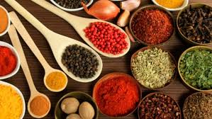
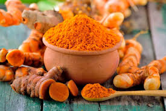

CHEPON - El alma de tus comidas
En CHEPON nos dedicamos a llevar hasta tu mesa las mejores especias, cuidadosamente seleccionadas y procesadas de forma artesanal. Nuestro compromiso es brindarte sabores auténticos que enriquezcan tu cocina con tradición, frescura y calidad.
¿Por qué elegir CHEPON?

Frescura Garantizada
Nuestras especias conservan todo su aroma y propiedades gracias a su molienda reciente y empaque cuidadoso.
100% Naturales
Sin aditivos ni conservantes. Solo ingredientes puros y seleccionados de forma responsable.

Tradición Familiar
CHEPON nace de generaciones de conocimiento en el arte de las especias. Sabores que cuentan historias.
Descubre el Sabor de la Vida
Explora nuestro catálogo de productos y dale un nuevo giro a tus recetas favoritas.
Ver Productos